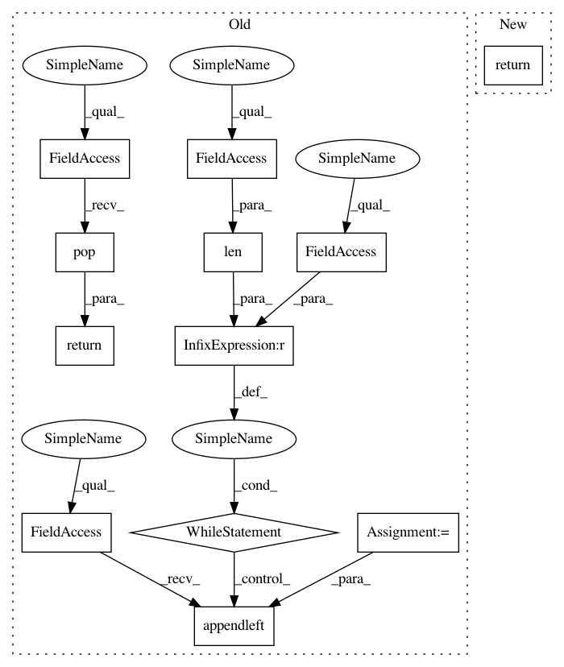

20692f755675935dbb6e46a8983605ed5430964d,flow/controllers/car_following_models.py,LinearOVM,get_accel,#LinearOVM#Any#,259
Before Change
else:
v_h = self.v_max
acc = (v_h - this_vel) / self.adaptation
while len(self.accel_queue) <= self.delay:
// Some behavior here for initial states - extrapolation, dumb
// filling (currently), etc
self.accel_queue.appendleft(acc)
return self.accel_queue.pop()
class IDMController(BaseController):
After Change
else:
v_h = self.v_max
return (v_h - this_vel) / self.adaptation
class IDMController(BaseController):
In pattern: SUPERPATTERN
Frequency: 4
Non-data size: 12
Instances
Project Name: flow-project/flow
Commit Name: 20692f755675935dbb6e46a8983605ed5430964d
Time: 2018-04-16
Author: akreidieh@gmail.com
File Name: flow/controllers/car_following_models.py
Class Name: LinearOVM
Method Name: get_accel
Project Name: flow-project/flow
Commit Name: 20692f755675935dbb6e46a8983605ed5430964d
Time: 2018-04-16
Author: akreidieh@gmail.com
File Name: flow/controllers/car_following_models.py
Class Name: CFMController
Method Name: get_accel
Project Name: flow-project/flow
Commit Name: 20692f755675935dbb6e46a8983605ed5430964d
Time: 2018-04-16
Author: akreidieh@gmail.com
File Name: flow/controllers/car_following_models.py
Class Name: BCMController
Method Name: get_accel
Project Name: flow-project/flow
Commit Name: 20692f755675935dbb6e46a8983605ed5430964d
Time: 2018-04-16
Author: akreidieh@gmail.com
File Name: flow/controllers/car_following_models.py
Class Name: OVMController
Method Name: get_accel